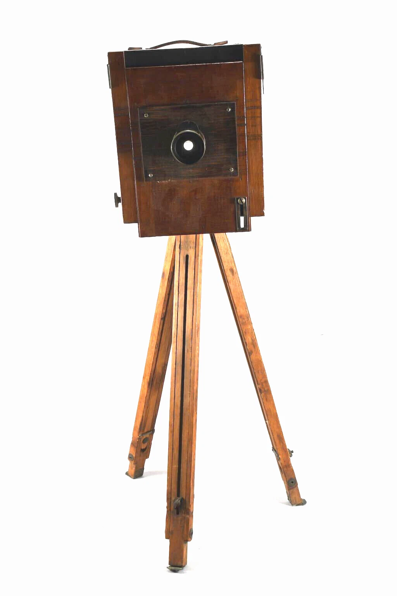
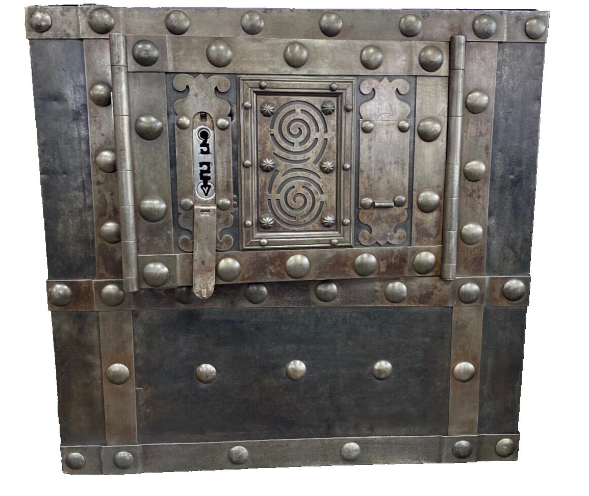

Antik Garmisch Partenkirchen
Shop auf eBay besuchen
Antiquitäten & Sammlerstücke
Originale Stücke aus unserem Shop in Garmisch-Partenkirchen
Ausgewählte Artikel
Schachspiel Schachbrett Holz Antik Zinn Figuren Römer
EUR 395,00
Artikel ansehen
Alter Militaria Stahlhelm Wehrmacht M42
EUR 590,00
Artikel ansehen
Vintage Rennrad Cycles Le Sphinx
EUR 2.999,00
Artikel ansehen
Antiker musealer Sekretär
EUR 2.850,00
Artikel ansehen

Alte Plattenkamera mit Stativ um 1900
EUR 750,00
Artikel ansehen

Antiker Tresor aus Italien um 1750
EUR 6.500,00
Artikel ansehen